---
layout: page
title: 太阳能字典
---
		

		
									<table style="margin-top: 10px;" border="0" cellpadding="0" cellspacing="0" width="100%">
										<tbody><tr>
											<td class="barleft" width="774" height="35"><b><h2>太阳能字典</h2></b></td>
											<td class="barright" width="52"><a href="#" class="black"></a></td>
										</tr>
										<tr>
											<td colspan="2" align="center">
												<table class="gongzuo" style="margin-top: 20px;" align="center" border="0" cellpadding="0" cellspacing="0" width="95%">
													<tbody><tr>
														<td align="left" height="40">
																		<a href="#a">A</a>
																		<a href="#b">B</a>
																		<a href="#c">C</a>
																		<a href="#d">D</a>
																		<a href="#e">E</a>
																		<a href="#f">F</a>
																    	<a href="#g">G</a>
																		<a href="#h">H</a>
																		<a href="#i">I</a>
																		<a href="#k">K</a>
																		<a href="#l">L</a>
																		<a href="#m">M</a>
																		<a href="#n">N</a>
																		<a href="#o">O</a>
																		<a href="#p">P</a>
																		<a href="#q">Q</a>
																		<a href="#r">R</a>
																		<a href="#s">S</a>
																		<a href="#t">T</a>
																		<a href="#v">V</a>
																		<a href="#w">W</a>
																		<a href="#z">Z</a>
														</td>
													</tr>
												</tbody></table>
												<table style="margin-top: 10px;" align="center" border="0" cellpadding="0" cellspacing="0" width="95%">
													<tbody><tr>
														<td class="zdbiaoti" align="left"><a name="a"></a>A</td>
													</tr>
													<tr>
														<td class="zdneirong" align="left"><strong>A</strong>, Ampere的缩写, 安培
															<br>
															<strong>a-Si</strong>, amorphous silicon的缩写, 含氢的, 非结晶性硅。
															<br>
															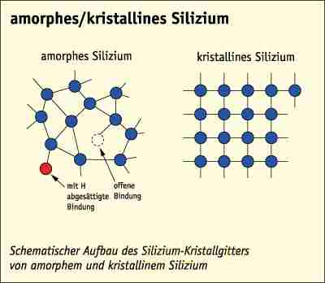<strong><br>
																Absorption</strong>, 吸收。<br>
															<strong>Absorption of the photons</strong>:光吸收;当能量大于禁带宽度的光子入射时，太阳电池内的电子能量从价带迁到导带，产生电子——空穴对的作用，称为光吸收。<br>
															<br>
															<strong>Absorptionscoefficient</strong>, 吸收系数, 吸收强度。<br>
															<strong>AC</strong>, 交流电。<br>
															<strong>Ah</strong>, 安培小时。<br>
															<strong>Acceptor</strong>, 接收者, 在半导体中可以接收一个电子。<br>
															<strong>Alternating current</strong>, 交流电，简称“交流. 一般指大小和方向随时间作周期性变化的电压或电流. 
															它的最基本的形式是正弦电流. 
															我国交流电供电的标准频率规定为50赫兹。交流电随时间变化的形式可以是多种多样的。不同变化形式的交流电其应用范围和产生的效果也是不同的。以正弦交流 
															电应用最为广泛，且其他非正弦交流电一般都可以经过数学处理后，化成为正弦交流电的迭加。<br>
															AM, air mass的缩写, 空气质量。<br>
															直射阳光光束透过大气层所通过的路程，以直射太阳光束从天顶到达海平面所通过的路程的倍数来表示。<br>
															当大气压力P=1.013巴，天空无云时，海平面处的大气质量为1。<br>
															<br>
															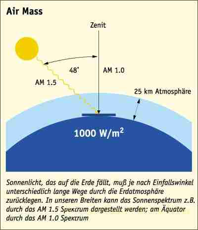<br>
															<strong>amorphous silicon solar cell</strong>:非晶硅太阳电池（a—si太阳电池）<br>
															用非晶硅材料及其合金制造的太阳电池称为非晶硅太阳电池，亦称无定形硅太阳电池，简称a—si太阳电池。<br>
															<strong>Angle of inclination</strong>, 倾斜角，即电池板和水平方向的夹角，0-90度之间。<br>
															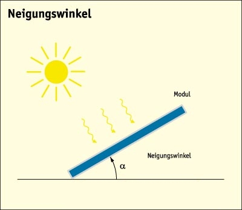<br>
															<br>
															<strong>Anode</strong>, 阳极, 正极。</td>
													</tr>
												</tbody></table>
												<table style="margin-top: 10px;" align="center" border="0" cellpadding="0" cellspacing="0" width="95%">
													<tbody><tr>
														<td class="zdbiaoti" align="left"><a name="b" id="b"></a>B</td>
													</tr>
													<tr>
														<td class="zdneirong" align="left"><strong>Back Surface Field</strong>, 缩写BSF, 
															在晶体太阳能电池板背部附加的电子层, 来提高电流值。<br>
															<strong>Bandbreak</strong>, 在半导体中, 价带和导带之间的空隙,对于半导体的吸收特性有重要意义。<br>
															<strong>Becquerel, Alexandre-Edmond</strong>, 法国物理学家, 在1839年发现了电池板效应。<br>
															<strong>BSF</strong>, back surface field的缩写。<br>
															<strong>Bypas-Diode</strong>, 与太阳能电池并联的二极管, 当一个太阳能电池被挡住, 其他太阳能电池产生的电流可以从它处通过。<br>
															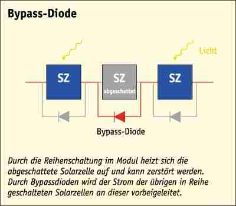</td>
													</tr>
												</tbody></table>
												<table style="margin-top: 10px;" align="center" border="0" cellpadding="0" cellspacing="0" width="95%">
													<tbody><tr>
														<td class="zdbiaoti" align="left"><a name="c" id="c"></a>C</td>
													</tr>
													<tr>
														<td class="zdneirong" align="left"><strong>Cadmium-Tellurid</strong>, 缩写CdTe; 
															位于II/VI位的半导体, 带空隙值为1,45eV, 有很好的吸收性, 应用于超薄太阳能电池板, 或者是连接半导体。<br>
															<strong>Cathode</strong>, 阴极，或负极，是在电池板电解液里的带负电的电极，是电池板电解液里带电粒子和导线里导电电子的过渡点。<br>
															<strong>C-Si, crystalline-silicon</strong>的缩写。<br>
															<strong>Cell temperature</strong>:电池温度 。系指太阳电池中P-n结的温度。<br>
															<strong>Charge control</strong>, 
															充电控制器，在电池板设备和电池之间联接。它控制并监控充电的过程。其他的功能如MPP（最大功率点跟踪）和保护电池不过多放电而损坏。<br>
															<strong>CIGS</strong>, Copper Indium Gallium Diselenide 的缩写。<br>
															<strong>CIS</strong>, Copper-Indium-Diselenide的缩写。<br>
															<strong>Concentrator solarcell</strong>, 
															浓缩电池板，借助反光镜或是透镜使阳光汇聚在电池板上，缺点是要不停地控制它的焦点一直在电池板上，因为太阳在不停地动。<br>
															<strong>Concentration? ratio</strong>:聚光率;聚光器接收到的阳光光通量与太阳电池接收到的光通量之比叫聚光率。<br>
															<strong>Conductibility</strong>, 
															当金属或半导体加上电磁场后，将会有一个和电磁场成比例增加的电流存在，该电流可以用电流密度来描述，即单位面积的电流强度。该电流强度越大，则说明该物质的导电能力越强，单位是S/cm2。西门子每平方厘米<br>
															<strong>Conduction band</strong>, 
															导带，通过许多原子的交换效应，在半导体内部会出现导带和价带，之间通过带沟隔开，电子可以运动到空穴里，空穴可以运行到价带里，例如在电磁场的作用下或通过传播，空穴电子对等。<br>
															<strong>Connection semiconductor</strong>, 连接半导体，指由两个或多个化学元素组成的半导体，如镓砷，镉碲，铜铟等。<br>
															<strong>Copper-Indium</strong>, 
															铜铟化合物，因为在薄层电池板里它具有很高的吸收能力，铜的电子价带具有1.0电子伏特，所以该化合物组成的电池板可以达到15.4%的效率。<br>
															<strong>Copper-Indium-Galium</strong>, 
															铜铟化合物化合物，因为在薄层电池板里它具有很高的吸收能力，在掺杂镓的铜的电子价带具有1.0到2.7电子伏特，所以该化合物组成的电池板可以达到17.7%的效率。<br>
															<strong>Corn border</strong>, 多晶硅每个晶体之间的边界，阻碍电荷的移动，因此单晶硅的效率总的来说比多晶硅高。<br>
															<strong>Crystal silicon</strong>, 晶体硅<br>
															<strong>Current</strong>, 
															电流，电流是指电荷的定向移动。电流的大小称为电流强度（简称电流，符号为I），是指单位时间内通过导线某一截面的电荷量，每秒通过一库仑的电量称为一「安培」（A）。安培是国际单位制中所有电性的基本单位。 
															除了A，常用的单位有毫安（mA）及微安(μA) 。<br>
															<strong>Czochralsky-Procedure</strong>, 制造单晶体硅的方法, 从硅中熔炼出来。</td>
													</tr>
												</tbody></table>
												<table style="margin-top: 10px;" align="center" border="0" cellpadding="0" cellspacing="0" width="95%">
													<tbody><tr>
														<td class="zdbiaoti" align="left"><a name="d" id="d"></a>D</td>
													</tr>
													<tr>
														<td class="zdneirong" align="left"><strong>DC</strong>, 直流电的缩写。<br>
															<strong>Degradation</strong>, 太阳能电池板的效率会随着光照时间增加而降低。<br>
															<strong>Diffusion</strong>, 电荷扩散, 产生一个浓度层。<br>
															<strong>Diode</strong>, 二极管, 电流只能朝一个方向流动。 太阳能电池其实理论上就是一个大面积, 被照射的二极管, I/U曲线特性。<br>
															<strong>Donator</strong>, 捐赠者, 在半导体中可给出一个电子。 对于硅, 原则上磷可作为捐赠者。<br>
															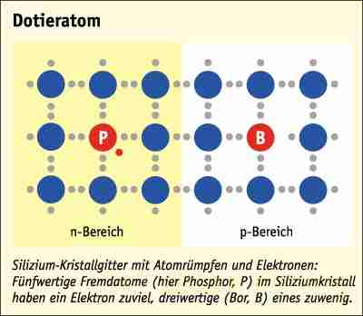<br>
															<br>
															<strong>Duennschichtsolarzelle</strong>, 一种不用晶片, 而是才用超薄技术生产出来的超薄太阳能电池板, 
															其材料为a-Si:H, CdTe, CIS, GaAs。<br>
															<strong>Duennschichttechnik</strong>, 生产超薄太阳能电池板的技术, 直接从便宜的基层材料制作, 比如玻璃, 金属层, 
															塑料层。 优点是省材料, 能源, 可制作大面积的太阳能电池板。 使用金属为a-Si:H, CdTe, CIS, GaAs。</td>
													</tr>
												</tbody></table>
												<table style="margin-top: 10px;" align="center" border="0" cellpadding="0" cellspacing="0" width="95%">
													<tbody><tr>
														<td class="zdbiaoti" align="left"><a name="e" id="e"></a>E</td>
													</tr>
													<tr>
														<td class="zdneirong" align="left"><strong>Efficiency</strong>, 效率, 
															指一个光伏单元产生的电能除以它所受的光照强度。<br>
															<strong>EFG-Procedure</strong>, Edgedefined Film Growth的缩写。 
															用这个方法可以从硅中熔炼出8角形的管子, 棱长10厘米, 总长可以到5米,可以切割成10x10厘米晶片。优点是切割损耗少。<br>
															<strong>EG-Si</strong>, Elecronic Grade Silizium的缩写, 用于芯片制作的高纯度硅。<br>
															<strong>Electrolyte</strong>, 电解质。<br>
															<strong>Elektron</strong>, 电子。<br>
															<strong>Elektronen-Loch-Paar</strong>, 电子空穴对, 半导体吸收一个光子, 释放出一个电子和一个空穴。<br>
															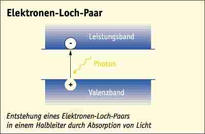<br>
															<br>
															<strong>Enclosure</strong>, 包装，防风雨模块的保护。 例如玻璃，等材料。<br>
															<strong>EVA</strong>, Ethylen-Venyl-Acetat的缩写。 封装太阳能电池板的薄膜。</td>
													</tr>
												</tbody></table>
												<table style="margin-top: 10px;" align="center" border="0" cellpadding="0" cellspacing="0" width="95%">
													<tbody><tr>
														<td class="zdbiaoti" align="left"><a name="f" id="f"></a>F</td>
													</tr>
													<tr>
														<td class="zdneirong" align="left"><strong>Fresnel lens</strong>:菲涅尔透镜;用微分切割原理制成的薄板式透镜。<br>
															<strong>FZ</strong>, float-zone-procedure的缩写。</td>
													</tr>
												</tbody></table>
												<table style="margin-top: 10px;" align="center" border="0" cellpadding="0" cellspacing="0" width="95%">
													<tbody><tr>
														<td class="zdbiaoti" align="left"><a name="g" id="g"></a>G</td>
													</tr>
													<tr>
														<td class="zdneirong" align="left"><strong>GaAs</strong>, Galllium Arsenid的缩写。半导体, 
															被用于太阳能电池板时, 效率可达22%。<br>
															<strong>Geometrical concentrator ratio</strong>:几何聚光率;聚光器面积与太阳电池面积之比叫几何聚光率。<br>
															<strong>Grid</strong>, 太阳能电池板上的金属导线。电阻越小越好, 这样能量损失少。<br>
															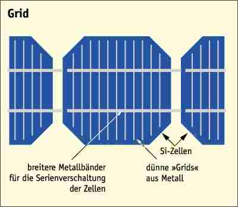</td>
													</tr>
												</tbody></table>
												<table style="margin-top: 10px;" align="center" border="0" cellpadding="0" cellspacing="0" width="95%">
													<tbody><tr>
														<td class="zdbiaoti" align="left"><a name="h" id="h"></a>H</td>
													</tr>
													<tr>
														<td class="zdneirong" align="left"><strong>Hole saw</strong>, 
															空穴锯，空穴锯是一个非常薄的金属片，就像耳膜一样薄，这个薄片在正中央有一个洞，它的边缘使用金刚石刀。使用该薄片切割使损耗在0.2到0.3微米之间。<br>
															<strong>Hole</strong>, 空穴，正的带电体，在半导体接收光照后，和电子同时出现的带电体，一般成为空穴电子对。<br>
															<strong>Hot Spot</strong>, 
															热点，在电池板部分被阴影遮挡时，被遮挡的单元不能发电同时有很大的电阻，对于串联的电路会有很大的热损耗，甚至烧坏该点的电池板。 
															为了避免此情况的发生，旁路二极管与各自的单元并联。从而便免欧姆的热损失。</td>
													</tr>
												</tbody></table>
												<table style="margin-top: 10px;" align="center" border="0" cellpadding="0" cellspacing="0" width="95%">
													<tbody><tr>
														<td class="zdbiaoti" align="left"><a name="i" id="i"></a>I</td>
													</tr>
													<tr>
														<td class="zdneirong" align="left"><strong>I</strong>：电流的缩写，国际单位为安培<br>
															<strong>Indium-Zinn-Oxid</strong>： 缩写（ITO)， 
															铟锌氧化物，透明的半导体，并具有很高的导电性，作为透明接触层应用于对很薄的电池板单元或是彩色物质单元。<br>
															<strong>Ingo</strong>: 从多晶硅或是单晶硅提炼出的块状物。<br>
															<strong>Integrated serial switching</strong>：集成的串联技术，在生产大面积的电池板时应用于薄膜技术。 
															在生产过程中大面积的电池板单元被激光束裁成单个的薄片，但是这个薄片的上表面要和邻居薄片的下表面组成串联。集成的串联技术是除了节省材料外的一个重要优点的薄膜技术。<br>
															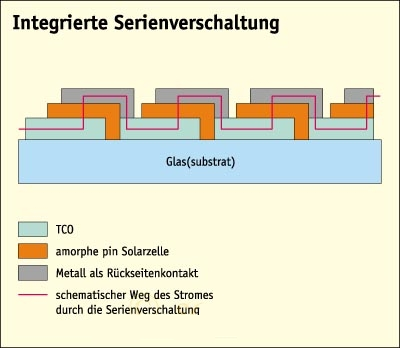<br>
															<strong>Intensity</strong>： 光照强度， 物理测量的单位面积的光照功率，单位是瓦特每平方米。<br>
															<strong>Intrinsic</strong>：描述一个没有掺杂的半导体和一个掺杂半导体的对比。<br>
															<strong>Inverter</strong>：逆变器，将变化的MPP由太阳能电池板提供的直流电转化为电网交流电的变频器。<br>
															<strong>Ion</strong>： 离子，分正和负的原子或者分子，离子在电解液里起到导电的作用。<br>
															<strong>ISC</strong>：短路电流。<br>
															<strong>Island system</strong>：孤岛系统，是不和大电网联网，只是供自己使用的光伏系统，例如只是在山里或是小岛上的光伏发电系统。<br>
															<strong>ITO</strong>：是铟锑氧化物的缩写。<br>
															<strong>I-U-characteristic curve</strong>： 电池板I-U特征曲线，代表太阳能电池的典型特征。 
															在这里太阳能电池板的输出的电压和电流的关系。 从I-U-曲线里可以看出该电池板以下的特征：电池板最大利用率，短路电流，开路电压，电池板效率等。<br>
															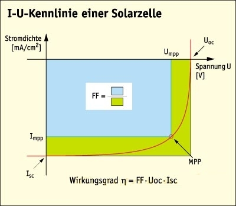</td>
													</tr>
												</tbody></table>
												<table style="margin-top: 10px;" align="center" border="0" cellpadding="0" cellspacing="0" width="95%">
													<tbody><tr>
														<td class="zdbiaoti" align="left"><a name="k" id="k"></a>K</td>
													</tr>
													<tr>
														<td class="zdneirong" align="left"><strong>kT</strong>, 热学能量(k= Boltzmann常数, 
															1.381x10-23 J/K, T = Kelvin绝对温度)<br>
															<strong>kWh</strong>：千瓦时，能量的单位。1kW=1000瓦，是一千瓦的灯泡亮一个小时锁消耗的能量。<br>
															<strong>kWp, peak</strong>：指的是最大的功率点，单位是千瓦，一般太阳能逆变器的功率就是指的是最大功率。</td>
													</tr>
												</tbody></table>
												<table style="margin-top: 10px;" align="center" border="0" cellpadding="0" cellspacing="0" width="95%">
													<tbody><tr>
														<td class="zdbiaoti" align="left"><a name="l" id="l"></a>L</td>
													</tr>
													<tr>
														<td class="zdneirong" align="left"><strong>Laminate</strong>：一种薄片材料，来保护电池板芯片，例如EVA或Tedlar。 
															通过该物质将电池板芯片整个用透明的物质密封起来，一方面保护电池板芯片，另外一方面还要保持阳光的穿透力。<br>
															<strong>Light trapping</strong>： 
															光的增透，在光完全被电池板吸收前，进入电池板的光通过反射和内表面的阻碍，光的增透对薄层电池板有着非常特别的意义，表面处理技术起着重要的作用。
															<br>
															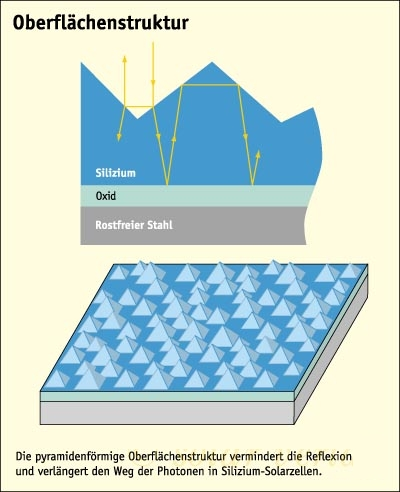</td>
													</tr>
												</tbody></table>
												<table style="margin-top: 10px;" align="center" border="0" cellpadding="0" cellspacing="0" width="95%">
													<tbody><tr>
														<td class="zdbiaoti" align="left"><a name="m" id="m"></a>M</td>
													</tr>
													<tr>
														<td class="zdneirong" align="left"><strong>Majority charge carrier</strong>：多子，描述半导体里的带电体，通常决定于掺杂的类型，例如在p型多子是空穴，n型多子则是电子。<br>
															<strong>Marginal cost payment time</strong>： 
															接收太阳能发电，向电网传输所获的收益，因此到一定的是将将收回太阳能设备的投资成本，这段时间叫做成本收回时间。<br>
															<strong>Metal-Insolator-Silicon</strong>：缩写MIS，金属绝缘硅，这种电池板类型包含与传统电池板的不同是没有PN结，这个电荷分离功能满足这里从打入铯原子的氧化硅里出来的电子反转层。优点是简化生产过程，不需要高温来掺杂。<br>
															<strong>Minority charge carrier</strong>：少子，描述半导体里的带电体，通常决定于掺杂的类型，例如在n型多子是空穴，p型多子则是电子。<br>
															<strong>Module effinciency</strong>：电池板模块的效率。<br>
															<strong>Module rated power</strong>：额定功率，电池板最大可能的输出功率，当太阳垂直照在电池板上时，单位为瓦特。<br>
															<strong>Module</strong>：电池板模块，将很多的太阳能发电单元联接，然后封闭后的电池板单元。之后可以灵活串联并联。<br>
															<strong>Mono crystal silicon</strong>： 单晶硅<br>
															<strong>Mono crystal Silicon</strong>：单晶硅，纯净的晶体硅<br>
															<strong>MPP</strong> （max power 
															point）：最大功率点，在这个点上更具I-U曲线，电池板可以提供最大的功率，通过MPP的跟踪和控制可以在各种情况下找到最大功率点从而使电池板的发电效率提高。</td>
													</tr>
												</tbody></table>
												<table style="margin-top: 10px;" align="center" border="0" cellpadding="0" cellspacing="0" width="95%">
													<tbody><tr>
														<td class="zdbiaoti" align="left"><a name="n" id="n"></a>N</td>
													</tr>
													<tr>
														<td class="zdneirong" align="left"><strong>N-endowment</strong>：N掺杂。<br>
															<strong>Net coupling</strong>：联网，太阳能发电装置通过逆变器把太阳能转化为电能输送到电网上的过程，和电网联网的发电装置不需要电能的储存。</td>
													</tr>
												</tbody></table>
												<table style="margin-top: 10px;" align="center" border="0" cellpadding="0" cellspacing="0" width="95%">
													<tbody><tr>
														<td class="zdbiaoti" align="left"><a name="o" id="o"></a>O</td>
													</tr>
													<tr>
														<td class="zdneirong" align="left"><strong>Omic loss</strong>：欧姆损耗，电流通过电阻的损耗，电能变成了热能。<br>
															<strong>Open circuit voltage</strong>：电池板开路电压，当电池板没有联通负载时，或者说没有电流流过时的正负极间的电压，根据I-U曲线就是电流为零的那个点对应的电压。</td>
													</tr>
												</tbody></table>
												<table style="margin-top: 10px;" align="center" border="0" cellpadding="0" cellspacing="0" width="95%">
													<tbody><tr>
														<td class="zdbiaoti" align="left"><a name="p" id="p"></a>P</td>
													</tr>
													<tr>
														<td class="zdneirong" align="left"><strong>Passivation</strong>：失活性，在每一个半导体的表面都有一个打开的连接，因为它为下一个原子打开。这样加速了带电粒子的复合。最简单的失活性的方法是在半导体的表面增添二氧化硅层。<br>
															<strong>P-endowment</strong>：p掺杂。<br>
															<strong>Performance Ratio</strong>：光伏系统的评判标准，是实际收益率除以理论收益率。<br>
															<strong>Photo- conductive effect</strong>:光电导效应 ;以导电率变化为特征的光电效应。
															<br>
															<strong>Photo effect</strong>： 光子效应，足够的光能能从金属的表面里打出电子，这和光电效应不可混淆，是两个概念。<br>
															<strong>Photo electronics chemical solar cell</strong>： 
															光电子化学光电池板，这是以电解液为基础，吸收光子，产生电子和空穴对，吸收光子是在敏感的表面层，在电解液里出现电荷流动。<br>
															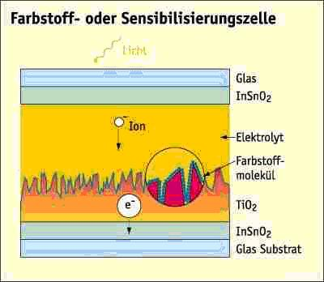<br>
															<br>
															<strong>Photon</strong>：光子，是以能量的形式并以光的速度运动，并且进入电池板内激发电子和空穴对的物质。<br>
															<strong>Photo-electric emission</strong>:光电发射;仅仅由于辐射能的射入而引起的电子发射。<br>
															<strong>Photo-electron</strong>:光电子;由光电效应放出的电子。
															<br>
															<strong>Photovoltaic effect</strong>：
光生伏特效应，简称“光伏效应”。指光照使不均匀半导体或半导体与金属结合的不同部位之间产生电位差的现象。它首先是由光子（光波）转化为电子、光能量转
化为电能量的过程；其次，是形成电压过程。有了电压，就像筑高了大坝，如果两者之间连通，就会形成电流的回路。<br>
															<strong>Photovoltaik</strong>： 是一项技术，将太阳光转换成为电能的一项技术。<br>
															<strong>Photo-voltaic concentrator array</strong>:聚光太阳电池方阵:由若干聚光电池组件组合在一起，构成的供电装置叫聚光太阳电池方阵。
															<br>
															<strong>Photovoltaic concentrator array field</strong>:聚光太阳电池方阵场。 
															由一系列聚光太阳电池方阵组成的聚光光伏发电系统叫聚光太阳电池方阵场。<br>
															<strong>Photovoltaic concentrator module</strong>:聚光太阳电池组件。系指组成聚光太阳电池，方阵的中间组合体，由聚光器、太阳电池、散热器、互连引线和壳体等组成。<br>
															<strong>PN junction</strong>： 
															采用不同的掺杂工艺,将P型半导体与N型半导体制作在同一块硅片上,在它们的交界面就形成空间电荷区称PN结。PN结具有单向导电性。<br>
															<strong>Polycrystalline silicon</strong>： 
															多晶硅，是主要的光伏材料，由连续的晶体组成，从几微米到厘米级。生产多晶硅的方法是块浇方法。<br>
															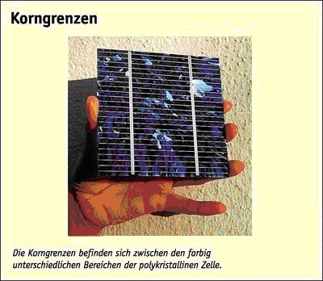<br>
															<strong>Polycrystalline silicon solar cell</strong>:多晶硅太阳电池。多晶硅太阳电池是以多晶硅为基体材料的太阳电池。<br>
															<strong>PV</strong>：Photovoltaik 的缩写，光伏。</td>
													</tr>
												</tbody></table>
												<table style="margin-top: 10px;" align="center" border="0" cellpadding="0" cellspacing="0" width="95%">
													<tbody><tr>
														<td class="zdbiaoti" align="left"><a name="q" id="q"></a>Q</td>
													</tr>
													<tr>
														<td class="zdneirong" align="left"><strong>Quantum exploit</strong>： 
															量子开采，光电池单元的量子开采描述了总共出现的电子数目和照射的光子数目与波长的一个关系。</td>
													</tr>
												</tbody></table>
												<table style="margin-top: 10px;" align="center" border="0" cellpadding="0" cellspacing="0" width="95%">
													<tbody><tr>
														<td class="zdbiaoti" align="left"><a name="r" id="r"></a>R</td>
													</tr>
													<tr>
														<td class="zdneirong" align="left"><strong>RMS</strong> amps, excluding the effects 
															of all harmonic exponents; it could be called fundamental power factor.<br>
															<strong>REGULATOR</strong> Prevents overcharging of batteries by controlling 
															charge cycle-usually adjustable to conform to specific battery needs.<br>
															<strong>RENEWABLE ENERGY</strong> Flows of energy that are regenerative or 
															virtually inexhaustible. Most commonly includes solar (electric and thermal), 
															biomass, geothermal, wind, tidal, wave, and hydro power sources.<br>
															<strong>Recombination</strong>：复合，指空穴和电子的复合，在光伏电池板里复合的电子和空穴并不能用来发电。<br>
															<strong>Reference device</strong>:?基准器件;是一种以标准太阳光谱分布为依据，用来测量辐照度或校准太阳模拟器辐射度的光伏器件。<br>
															<strong>Reflexion loss</strong>：反射损耗，从电池板表面反射掉的光并不能用来发电，所以要有增透层来尽量减少光的反射。<br>
															<strong>Roll to roll process</strong>： 
															便宜的工业处理用来生产薄层太阳能光伏单元在金属或是塑料薄膜片基上，在这里灵活的被卷起的片基被展开，然后在处理炉里镀层，然后再卷起来。<br>
															</td>
													</tr>
												</tbody></table>
												<table style="margin-top: 10px;" align="center" border="0" cellpadding="0" cellspacing="0" width="95%">
													<tbody><tr>
														<td class="zdbiaoti" align="left"><a name="s" id="s"></a>S</td>
													</tr>
													<tr>
														<td class="zdneirong" align="left"><strong>Secondary concentrator</strong>:二次聚光器;将通过聚光器的会聚阳光再一次进行会聚的光学装置叫二次聚光器。
															<br>
															<strong>Semiconductor</strong> ： 
															半导体，是固体，和金属对比拥有化学价带和传导带之间的一个空白带，电荷载流子不要可以随意流动。影响一个半导体的传导性的可能性可以通过掺杂来改变它的导电性(即太阳能电池)。 
															在吸收光子之后电子将从价带激活进入导带，从而出现空穴形成电流。<br>
															<strong>Sensitizing layer</strong>： 敏感层，光电化学电池板的吸收光的那一层。<br>
															<strong>Serial resenstance</strong>：串联电阻，指电池板单元在串联的时候，在连接的时候应该保证好的接触，否则会增大损耗。<br>
															<strong>Setpoint tracing</strong>：照射方向自动跟踪，通过校对太阳板，从而使太阳光一直是垂直照在太阳板上。<br>
															<strong>Short circuit current</strong>： 短路电流。<br>
															<strong>Short circuit current</strong>：电池板供出的电流，当电池板两极短路时流过的电流。在I-U-曲线上，电压为零时的电流。<br>
															<strong>Shunt resenstance</strong>： 并联电阻。<br>
															<strong>Silicon</strong>：化学元素，硅guī（台湾、香港称矽xī）是一种化学元素，它的化学符号是Si，旧称矽。原子序数14，相对原子质量28.09，有无定形和晶体两种同素异形体，同素异形体有无定形硅和结晶硅。属于元素周期表上IVA族的类金属元素。<br>
															晶体结构：晶胞为面心立方晶胞。<br>
															<strong>silicon solar cell</strong>:硅太阳电池。硅太阳电池是以硅为基体材料的太阳电池。
															<br>
															<strong>single crystalline silicon solar cell</strong>:单晶硅太阳电池。单晶硅太阳电池是以单晶硅为基体材料的太阳电池。<br>
															<strong>Single solar cell</strong>:单体太阳电池;具有正、负电极并能把光能转换成电能的最小太阳电池单元。称为单体太阳电池。<br>
															<strong>Solar Cell</strong>：光伏单元，指光伏电池的电子部分，吸收电子直接转化为电能。<br>
															<strong>Solar cell area</strong>:太阳电池面积;系指太阳电池全部光照面面积（包括栅线）。
															<br>
															<strong>Solar concentrator</strong>:太阳聚光器。用于将阳光聚在一起的光学器件叫太阳聚光器，太阳聚光器通常有反射式、透射式、荧光式等多种。<br>
															<strong>Solar constant</strong>：大气层里最大的太阳照射常数，为1.395 Watt/m2，瓦每平方米。<br>
															<strong>Solar energie</strong>：太阳能。<br>
															<strong>Solar Home System</strong>： 
															太阳能家庭发电系统，指使用太阳能电池板，充电控制器，蓄电池组成的系统。安装与光能充分的区域，孤岛运行，在远离电网支配下使用，每天发电能量在几度以下。<br>
															<strong>Solar module</strong>：太阳能电池模块，光伏模块。<br>
															<strong>Solar Silicon</strong>： 
															为光伏发电而专门生产的高纯度硅，与在芯片里使用的高纯度硅相比纯度还高，生产方法例如，块浇法，Czochralsky 和 EFG法等。<br>
															<strong>solar photovoltaic energy system</strong>:太阳光伏能源系统。系指利用太阳电池的光生伏特效应，将太阳能直接转换成电能的发电系统。<br>
															<strong>Solar thermie</strong>： 光热装置，使用太阳光能直接产生热能，和光伏发电是有区别的。<br>
															<strong>Space Charge Zone</strong> ： 空间电荷区，在 P 
															型半导体中有许多带正电荷的空穴和带负电荷的电离杂质。在电场的作用下，空穴是可以移动的，而电离杂质（离子）是固定不动的。N型半导体中有许多可动的负电子和固定的正离子。当P型和N型半导体接触 
															时，在界面附近空穴从P型半导体向N型半导体扩散，电子从N型半导体向P型半导体扩散。空穴和电子相遇而复合，载流子消失。因此在界面附近的结区中有一段 
															距离缺少载流子，却有分布在空间的带电的固定离子，称为空间电荷区。<br>
															<strong>Stack solar cell</strong>： 堆积光伏发电板，由两个或多个叠起来的发电电池层组成，每一层吸收不同频率的光谱。<br>
															<strong>STAND-ALONE SYSTEM</strong> (SA) A system which operates independently 
															of the utility lines. It may draw supplementary power from the utility but is 
															not capable of providing power to the utility.<br>
															<strong>String</strong>： 串，描述一个光伏模块内的多个串联的电池单元。<br>
															<strong>Substrat</strong>：片基，机械的稳定的基础层，主要作为基础层来制造电池板，例如使用玻璃，金属，塑料薄膜，或晶片等。<br>
															<strong>Sun collektor</strong>： 
															太阳能收集器,集热器，直接将太阳能转化为热能，使用高储热的物质诸如水或油等，之后使用热交换器使用所搜集的热量。<br>
															<strong>Sun equivalent hours</strong>： 太阳能的等价小时，一个光伏发电系统的年收益（千瓦时）除以它最大的功率。<br>
															<strong>Sun hours</strong>：太阳小时，顾名思义，是在一个地区每年一共的光照小时数，是衡量一个地区是否适合安装光伏发电装置的最重要的因素。<br>
															<strong>Sun simulator</strong>： 太阳模拟器，是一个装置借助特殊的灯管来产生光谱。<br>
															<strong>Sun spectrum</strong> ： 
															光谱，由发光物质直接产生的光谱称为发射光谱。连续光谱：由连续分布的一切波长的光组成，是炽热的固体，液体及高压气体发光产生的光谱，诸如太阳的光谱，在地球上观察太阳光谱很大受大气的影响。<br>
															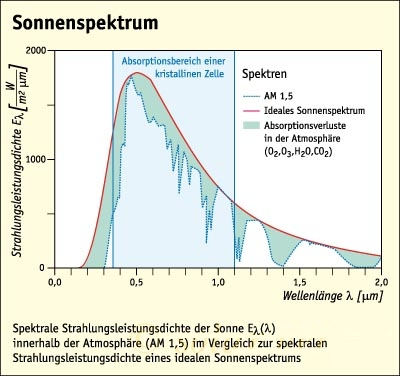<br>
															<br>
															<strong>Surface construction</strong>：表面处理，通过机械或者化学方法摩擦电池板的表面，这样有助于吸收太阳光，例如通过增透的方式（light 
															trapping）。<br>
															<strong>System efficiency</strong>： 系统的效率，指光伏系统向电网传输的能量除以光照能量。</td>
													</tr>
												</tbody></table>
												<table style="margin-top: 10px;" align="center" border="0" cellpadding="0" cellspacing="0" width="95%">
													<tbody><tr>
														<td class="zdbiaoti" align="left"><a name="t" id="t"></a>T</td>
													</tr>
													<tr>
														<td class="zdneirong" align="left"><strong>Tandem solar cell</strong>： 
															叠型光伏单元，指由两个叠在一起的单元组成的光伏电池，主要是由超薄层技术来生产。<br>
															<strong>Tedlar</strong>： 塑料薄膜，应用于生产光伏模块的薄膜。<br>
															<strong>Temperature coefficient</strong>：当温度上升时，给出了每一度的温度对光电电池板效率的衰减，取决于电池板的材料。<br>
															<strong>theoretical efficiency</strong>：理论效率，指电池板在理想的情况下的效率。<br>
															<strong>Time constant</strong>:时间常数;辐射度发生一次突变后,辐射表或光伏发电器恢复到稳定值的63.2%所需的时间。<br>
															<strong>Tracking</strong>： 跟踪。<br>
															<strong>Transparent Conductive Oxide</strong>：透明导电氧化层。<br>
															<strong>Tripel solar cell</strong>：三层光伏单元，由三层叠在一起的电池单元组成，每一层对不同的光谱有很强的吸收能力，主要是超薄层技术的生产决定。</td>
													</tr>
												</tbody></table>
												<table style="margin-top: 10px;" align="center" border="0" cellpadding="0" cellspacing="0" width="95%">
													<tbody><tr>
														<td class="zdbiaoti" align="left"><a name="v" id="v"></a>V</td>
													</tr>
													<tr>
														<td class="zdneirong" align="left"><strong>Valency band</strong>：价带<br>
															<strong>Voltage</strong>： 电压，单位伏特，是衡量两点电场强度的物理量。</td>
													</tr>
												</tbody></table>
												<table style="margin-top: 10px;" align="center" border="0" cellpadding="0" cellspacing="0" width="95%">
													<tbody><tr>
														<td class="zdbiaoti" align="left"><a name="w" id="w"></a>W</td>
													</tr>
													<tr>
														<td class="zdneirong" align="left"><strong>Wafer</strong>：晶片，描述了来自半导体材料的薄片。作为片基生产电脑芯片或是太阳能电池板使用。是由半导体块切割而成，一般厚度0.2到0.3微米左右。<br>
															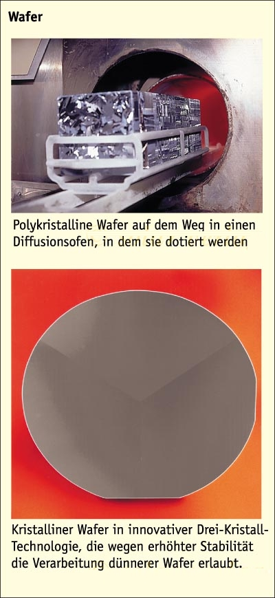<br>
															<br>
															<strong>Watt-Peak</strong>： (缩写 Wp)， 是描述电池板功率的单位。<br>
															<strong>Wave length</strong>： 波长，光波首先作为波，波长是指两个相邻波峰之间的距离，可见光的波长般是0.3到0.8微米。</td>
													</tr>
												</tbody></table>
												<table style="margin-top: 10px;" align="center" border="0" cellpadding="0" cellspacing="0" width="95%">
													<tbody><tr>
														<td class="zdbiaoti" align="left"><a name="z" id="z"></a>Z</td>
													</tr>
													<tr>
														<td class="zdneirong" align="left"><strong>Zinc Oxid</strong>：锌氧化层，透明的半导体材料具备很强的导电能力，主要应用于超薄层材料。<br>
															<strong>Zone melting method</strong>，指生产高纯度硅的一种方法。在这个方法里，多晶棒从底部被慢慢融化，凝固的时候就会出现硅晶体，这个方法最重要的优点是，便于硅的纯度的增加<br>
															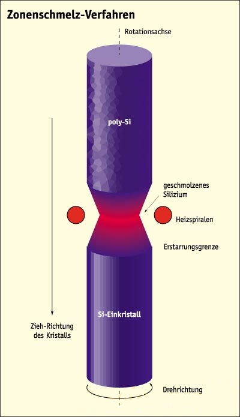</td>
													</tr>
												</tbody></table>
											</td>
										</tr>
									</tbody></table>
								</td>
							</tr>
						</tbody></table>
					</td>

	
</tbody></table>